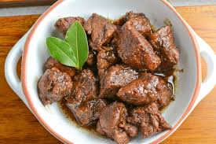
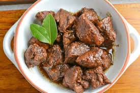

Pork Adobo
 


This is a recipe post for Filipino Pork Adobo.
It is a dish composed of pork slices cooked in soy sauce, vinegar, and garlic.
There are version wherein onions are also added.
This is also possible when you use chicken instead of pork.
Adobo is a popular dish in the Philippines, along with Sinigang.
Ingredients:
- 2 lbs pork belly
- 2 tablespoons garlic minced or crushed
- 5 pieces dried bay leaves
- 4 tablespoons vinegar
- 1/2 cup soy sauce
- 1 tablespoon peppercorn
- 2 cups water
- Salt to taste
Instructions:
- Combine the pork belly, soy sauce, and garlic then marinade for at least 1 hour
- Heat the pot and put-in the marinated pork belly then cook for a few minutes
- Pour remaining marinade including garlic.
- Add water, whole pepper corn, and dried bay leaves then bring to a boil. Simmer for 40 minutes to 1 hour
- Put-in the vinegar and simmer for 12 to 15 minutes
- Add salt to taste
- Serve hot. Share and enjoy!